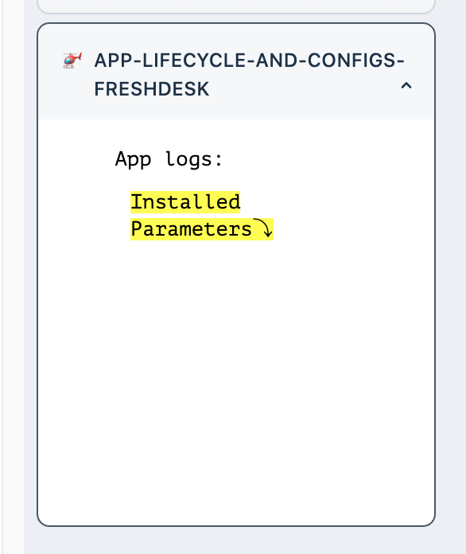
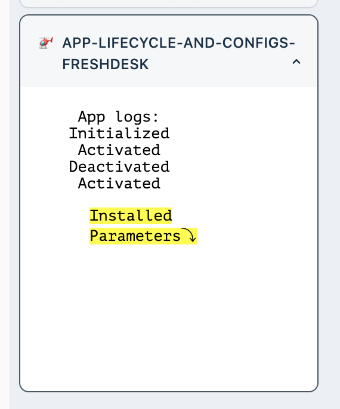
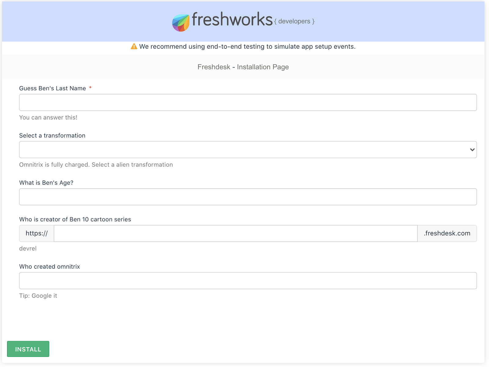
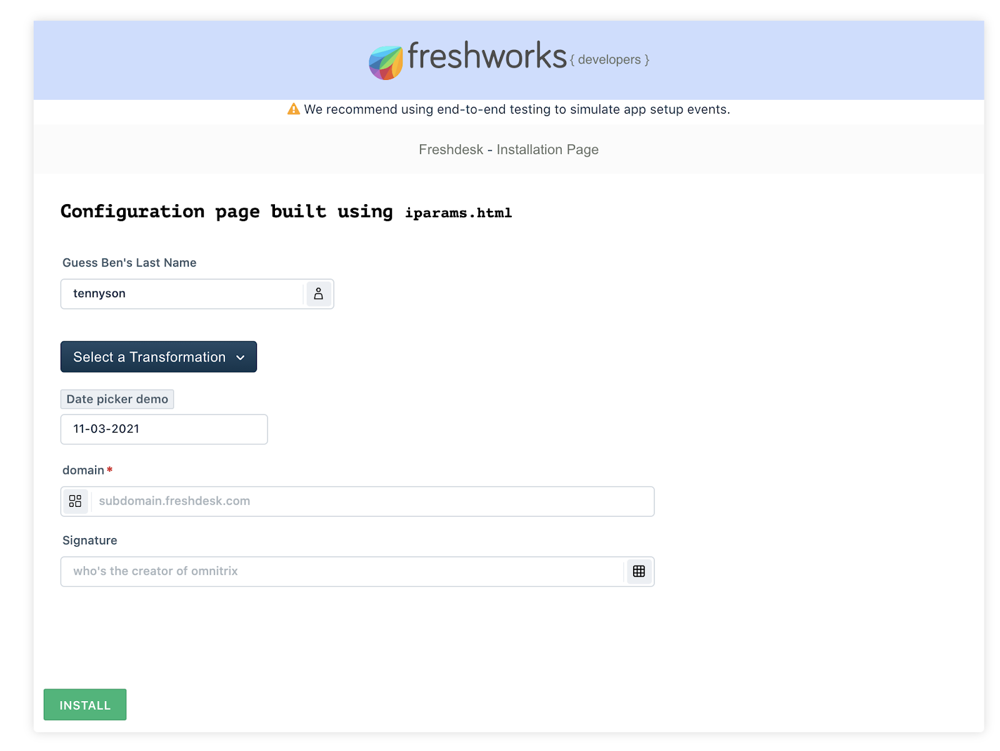

An app served by Freshworks developer platform will have app lifecycle event listeners to which callbacks can be registered with. In this tutorial, we will explore app lifecycle events to use in favour of app's requirements.
On the other hand, apps might also require a configuration page. Users can configure settings related to the app before and after the app is installed. We will explore two ways how you can build those configuration pages.
You will start by writing code for app lifecycle events for one of the app placeholders. Later we will build a configuration page for the same app both with a low-code way (ft. iparams.json ) and regular way (ft. iparams.json) in different git branches.
Let's clone the starting point
git clone https://github.com/freshworks-developers/app-lifecycle-and-configs-freshdesk.git
Or you can also
> fdk runlocalhost:10001After you open the source code, a bunch of HTML, CSS and JS files can be found. These files render your app in ticket_sidebar placeholder.

At this point the following are apparent in the app,
App logs. You will write code to observe app lifecycle events. When ever one occurs, the app displays the event that has occurred.Installed Parameters. For now, just ignore it. We will discuss this later as we explore configuration pages.HTML, CSS and JS files that you wrote will be rendered in an inline frame (iframe) provided by Freshdesk in supported placeholders.
Let's start by opening app.js in app/scripts.The existing code invokes renderApp(){..} which is not defined yet. Let's define it and understand what is happening.
Add following code in app.js
function renderApp() {
app
.initialized()
.then(function onInit(_client) {
window['client'] = _client;
appLifeCycleEvent('Initialized');
client.events.on('app.activated', () => {
appLifeCycleEvent('Activated');
});
client.events.on('app.deactivated', () => {
appLifeCycleEvent('Deactivated');
});
})
.catch(console.error);
}
function appLifeCycleEvent(state) {
return notes.insertAdjacentHTML('beforebegin', `<li>${state}</li>`);
}
renderApp(){..}we try to access 'app'. Platform attaches the app to the window of<iframe>.app object,initialized() is invoked. app.initialized() returns a promise object which resolves with the client object.client object can observe few events. We can register a callback when the app is activated by passing the ‘app.activated' argument and corresponding callback function.appLifeCycleEvent(..) invoked in the callbacks registered with 'app.activated' and'app.deactivated'.onInit(_client){..} would be executed when app is initialized.For the current app being served in ticket_sidebar the app.initialized() is invoked when Freshdesk page loads for the first time, activate is invoked when user clicks and opens the app explicitly. The deactivate is fired when the user moves to a different ticket in the ticket details page.

If you have done it right, the above is how your app would add text to the UI.
Before you proceed with this section, try installing any free app (example: signature management app) from the marketplace to your Freshdesk Trial account. As the installation process of the app begins, Freshdesk users will be required to fill in details depending on requirements of the app.
Let's go ahead and build one such configuration page. Everything related to configuration page would be under config/ directory
Open iparams.json and replace the following JSON configuration with the file contents,
{
"hero": {
"display_name": "Guess Ben's Last Name",
"description": "You can answer this!",
"type": "text",
"required": true,
"visible": true,
"secure": false,
"regex": {
"alphanumeric": "^[a-zA-Z0-9_]*$",
"alphanumeric-error": "Name validation failed"
}
},
"omnitrix": {
"display_name": "Select a transformation",
"type": "dropdown",
"options": [
"Cannonbolt",
"Heatblast",
"Four Arms",
"Grey Matter",
"Jetray",
"Humungousaur",
"Slapback",
"Goop",
"Way Big",
"Diamond Head"
],
"default_value": "Grey Matter",
"required": false,
"description": "Omnitrix is fully charged. Select a alien transformation"
},
"age": {
"display_name": "What is Ben's Age?",
"type": "number"
},
"creatorDomain": {
"display_name": "Who is creator of Ben 10 cartoon series",
"type": "domain",
"description": "devrel",
"type_attributes": {
"product": "freshdesk"
}
},
"signature": {
"display_name": "Who created omnitrix",
"description": "Tip: Google it",
"type": "text",
"events": [
{
"change": "checkSignature"
}
]
}
}
Before we discuss the contents of this file specifically, all that's required to for the UI to be automatically rendered. Let's quickly go ahead and re-run the app.
❯ fdk run
Starting local testing server at http://*:10001/
Append 'dev=true' to your Freshdesk account URL to start testing
e.g. https://domain.freshdesk.com/a/tickets/1?dev=true
Quit the server with Control-C.
To test the installation page, visit - http://localhost:10001/custom_configs
Notice there is a new route on :10001 with path custom_configs. Go ahead and open it.

You will find a web page like above being rendered. This is based on the JSON you've just filled out.
If you had taken a closer look at assets/iparams.jsyou'd notice the following code,
function checkSignature(sign) {
return sign.toLowerCase() === 'azmuth' ? '' : 'Wrong signature';
}
Above is a callback function that allows you to observe UI events and invoke the callback. For example, in the current case signature is a field which can be validated again with the checkSignature(){..} function. If the return value of checkSignature is an empty string the Installation proceeds. Else, the app will throw an error and requests the user to enter expected details by the app. Learn more about this dynamic behavior in the docs.
Freshworks Apps also support the regular HTML, CSS and JS to be used to build a configuration page. But Either iparams.json or iparams.html to be used at the same time. On the same grounds, let's rollback to the app lifecycle events checkpoint and start building the same page using iparams.html
❯ git checkout app-life-cycle
Switched to branch 'app-life-cycle'
Your branch is up to date with 'origin/app-life-cycle'.
If you see any errors while switching the branch, Try running❯ git stashXX``
Saved working directory and index state WIP on start: X80XX
This temporarily hides all the changes you've made while working on start branch and allows to switch smoothly to app-life-cycle branch
Delete everything that is already existing under config/ directory and create iparams.html , assets/iparams.js , assets/iparams.css. Let's discuss what's different in this approach,
Write following code in recently createdSee iparams.html file
<!DOCTYPE html>
<html lang="en">
<head>
<meta charset="UTF-8" />
<meta http-equiv="X-UA-Compatible" content="IE=edge" />
<meta name="viewport" content="width=device-width, initial-scale=1.0" />
<link rel="stylesheet" href="./assets/iparams.css" />
</head>
<body>
<main>
<h3>
Configuration page built using
<code>iparams.html</code>
</h3>
<fw-input
label="Guess Ben's Last Name"
icon-right="contact"
placeholder="Try to google search"
autocomplete="on"
maxlength="25"
class="text-field"
></fw-input>
<fw-dropdown-button label="Select a Transformation" class="select-alien">
<div slot="dropdown-options">
<option id="1" value="Cannonbolt">Cannonbolt</option>
<option id="2" value="Heatblast">Heatblast</option>
<option id="3" value="Four Arms">Four Arms</option>
<option id="4" value="Grey matter">Grey matter</option>
<option id="5" value="Jetray">Jetray</option>
<option id="6" value="Humungousaur">Humungousaur</option>
<option id="7" value="Slapback">Slapback</option>
<option id="8" value="Goop">Goop</option>
<option id="9" value="Way Big">Way Big</option>
<option id="10" value="Diamond Head">Diamond Head</option>
</div>
</fw-dropdown-button>
<section class="date-domain">
<fw-label value="Date picker demo" color="grey"></fw-label>
<fw-datepicker placeholder="range" mode="single date" class="datepicker"></fw-datepicker>
<fw-input
required="true"
type="text"
icon-left="items"
label="domain"
size="30"
placeholder="subdomain.freshdesk.com"
class="domain"
></fw-input>
<fw-input
label="Signature"
icon-right="grid"
placeholder="who's the creator of omnitrix"
autocomplete="on"
maxlength="25"
class="sign"
></fw-input>
</section>
</main>
</body>
<script src="./assets/iparams.js"></script>
<script>
let selectedVal = document.querySelector('.select-alien');
let selectedDate = document.querySelector('.datepicker');
let domain = document.querySelector('.domain');
let nameField = document.querySelector('.text-field');
let signature = document.querySelector('.sign');
function postConfigs() {
return {
transformation: selectedVal.value,
domain_url: domain.value,
name: nameField.value,
date: selectedDate.value
};
}
function getConfigs({ date, name }) {
selectedDate.value = date;
nameField.value = name;
return;
}
function validate() {
if (signature.value == 'azmuth') return true;
else return true;
}
</script>
<script src="https://static.freshdev.io/fdk/2.0/assets/fresh_client.js"></script>
<script type="module" src="https://unpkg.com/@freshworks/crayons/dist/crayons/crayons.esm.js"></script>
<script nomodule src="https://unpkg.com/@freshworks/crayons/dist/crayons/crayons.js"></script>
</html>
<script> tag. You will noticepostConfigs(){..} , getConfigs(..){..} and validate(){..}.postConfigs(){..} ensures to pick the inputs entered by the user and sends to the platform.getConfigs(..){..} is used to populate the fields. If not used, User opens the configuration page with blank fields every single time. It is not user friendly to require users to fill in the fields again.validate(){..} is used to validate certain fields so that the app can decide to proceed or halt the installation or change in app configuration.
Above is the checkpoint screenshot of the simulated configuration page.
See the source code at this checkpoint
Check the documentation for complete details as reference when you start building for your apps!
The app lifecycle events are based on the behaviour of the placeholder.
Configuration pages that are discussed in this tutorial will help you if they are consumed by the app. But these configuration pages are capable of securing sensitive information being exposed in the browser by using Request Method. Refer to Request Method to learn more on those capabilities.
Congratulations on completing this tutorial!